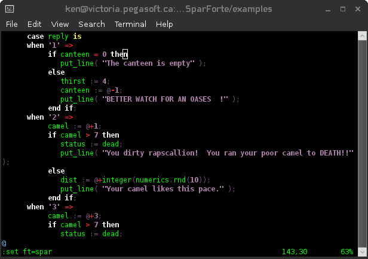

![[SparForte]](art/sparforte.png)
![[Banner]](art/header_cloud.png)
![[Top Main Menu]](art/menu_left.png) |
Intro | Tutorials | Reference | Packages | Examples | Contributors |
| | |||||||||||||||
| ||||||||||||||||
Frequently Asked QuestionsThis section contains answers to frequently asked questions on Sparforte. See also: Git-Hub Wiki at https://github.com/kburtch/SparForte/wiki. General QuestionsWhat does Sparforte Stand For?![[Ryu]](pictures/sf2_ryu.png)
To "Spar" is to duel. "Forte" (pronounced FORE-tay) is a music term for loudness. If you are going to spar, spar loud. Together "Sparforte" expresses "sound design". ![[Roosevelt Bridge]](pictures/roosevelt_bridge.jpg)
"Spar" is also a stout naval mast or boom and "Forte" is a proficiency or skill. So, alternatively, "Sparforte" can also mean a proficient or skillful programming framework. Spar can also mean to argue in a non-aggressive way, as with critics. "Sparforte" expresses confident strength and quality engineering. Work fast. Work well. What is the Difference between Bush (Business Shell) and Sparforte?The Business Shell (or Bush) was the original name of the project. There were frequent complaints that Bush was a poor choice for Internet searches. "Bush" results in millions of page hits for a famous family. "Business Shell" resulted in millions of pages hits for a petroleum company. After several dozen names were reviewed, "Sparforte" was chosen as the new name for the project. Can Sparforte run Bush (Business Shell) scripts?Yes. The only exception is that web template tags must be <?spar instead of <?bush. What is AdaScript? How does it relate to Sparforte?AdaScript is the programming language used by Sparforte. Sparforte is the original AdaScript interpreter. Since the language and the interpreter names are different, other projects can be developed using AdaScript--even other interpeters. Do I need to know Ada to learn AdaScript?No. In fact, AdaScript may be easier to learn than Ada. Also, the documentation doesn't assume knowledge of another language. What are the biggest differences between Ada and AdaScript?AdaScript is intended to be a subset of Ada 95 with extensions for the Bourne shell and SQL. However, if you come from an Ada background, you'll notice some key differences:
What is Sparforte/BUSH 2.0?This is an advanced protoptype for upcoming features. The prototype is prerelease and unstable: it may not compile or function. It is intended for use by Sparforte developers. Periodic snapshots are put on the Sparforte home page. Is Sparforte a "cloud" language or an "agile" language? Is there a single thing it excells at? What is it's "killer app"?Sparforte is designed to improve speed and quality in development over rival tools while managing the SDLC, scaling and code aging better. These, of course, are not things that will excite your coworkers or management. These are general things that impact many aspects of development. I'm not a marketer and I don't have trendy buzzwords word attach to Sparforte. Using SparforteHow Do I Use Vim with Sparforte?Even with many popular IDE's available, vi continues to be the most commonly used editor for writing programs on Linux/UNIX systems. The Sparforte download page has a file called "spar.vim". If you have access to the vim syntax folder (usually /usr/share/vim/.../syntax), you can copy this file to that folder. If you can't install the spar.vim file, you use it as a local, custom syntax file as described at http://www.fleiner.com/vim/create.html. To make vim use the syntax hilighting, you can add this to your .vimrc configuration file. syntax on filetype on vim autoload it for spar files with au BufNewFile,BufRead *.sp set filetype=spar. Or enable modeline support with "set modeline" in your .vimrc syntax on filetype on set modeline and include the file type in vim instructions embedded in a comment in your program like this: -- vim: ft=spar  How Do I Use kdevelop with Sparforte?Switch the editor language to Ada. This will provide around 90% of the highlighting and other features you are looking for. This is located under Editor / Tools / Highlighting / Source menu.
How Do I Use Eclipse with Sparforte?Eclipse has support for Ada (though I've never tried it). There is a AdaCore's GNATBench plug-in for GCC Ada, AonixADT for the Aonix Ada compiler, and an Ada Developer Tools project. There may be others. See if you can configure one of these plug-ins to recognize Sparforte scripts as Ada. This may give you 90% of the hilighting and other features you are looking for. How Do I Use NetBeans with Sparforte?NetBeans has support for Ada (though I've never tried it). There is an Ada Plug-in. See if you can configure the plug-in to recognize Sparforte scripts as Ada. This may give you 90% of the hilighting and other features you are looking for. Why are the documentation colours wrong in Firefox on Linux?Firefox colour correction feature behaves oddly with certain graphics drivers on Linux. Try opening the URL about:config, confirm the warning and change gfx.color_management.mode from 2 to 0 to disable colour management. When I use spar as a login shell, why can't I use Control-D to log out?This is the same behaviour as in the Bash shell if you use the ignoreeof option. It is to prevent you from accidentally logging yourself out when exiting several shells quickly using Control-D. How Do I Install Sparforte?Follow the instructions in the INSTALL text file included with your download. Are there any Linux distributions that carry Sparforte?At the last time I checked, Sparforte is available on ArchLinux. How Do I Report a Sparforte Bug?Follow the instructions in the Intro/Preface section of this documentation. Programming QuestionsWhy do I get an error when I run commands in backquotes?Sparforte requires all commands to be terminated with a semi-colon. This includes commands in backquotes. For example, files : string := `ls;`; Why do I get an error when I run a command with a long option on the command prompt?In a command like "ls --help", Sparforte appends a semi-colon before running the command. But "--" is the comment symbol and the semi-colon is hidden as part of the comment, producing a "shell word or semi-colon expected" or "End of File" error. The solution is to escape the double-minus. For example, use quotes around the long option, or backslashes before each minus sign, or use AdaScript parameters. Why can't I use put_line, ?, etc. to start a command pipeline?There are 3 kinds of subprograms in Sparforte: commands, procedures and functions. Commands can have the I/O redirected. Functions can be used in expressions. Procedures are stand-alone. put_line and related are procedures so they can't be used in a command pipeline. I declared a variable inside of a pragma debug but it wasn't declared. Why not?The commands in the backquotes aren't evaluated until the script runs. When the script syntax is checked, the variable declaration hasn't executed yet so the variable doesn't exist. I used "with separate" inside of a pragma debug but it nothing seemed to happen. Why not?The commands in the backquotes are a small script. When the commands run, the "with separate" subscript is loaded into the running script...the small script in the backquotes not the main script. How do I convert strings to numbers?There are built-in functions to do this. numerics.value converts a string to its equivalent value: numerics.value("5") returns 5. numerics.pos returns the Latin-1 value: numerics.pos( "A" ) returns 65. When I convert numbers to strings, why do they sometimes have a leading space character?For historical reasons, the Ada language uses a leading space for positive numbers and a leading minus for negative numbers. Sparforte also follows this convention for GCC Ada compatibility. So "?", strings.image, put_line, etc. will put a leading space before a positive number. To remove the leading space, use strings.trim(). How do I read in a number like scanf, readln, etc?get_line returns a universal type, not a string, so it can save to a string or numeric variable. n : integer := get_line You can also cast the result using numerics.value like this: n := numerics.value( get_line ); How do I format numbers like printf??The built-in put procedure (not put_line) can do this. The optional final parameter is a picture string describing the number's layout. See the put in the package section. How do I create a C-style string?Create a string and append an ASCII or Latin_1 NUL character. c_string1 : string := "This is a C string" & ASCII.NUL c_string2 : string := "This is a C string" & Latin_1.NUL What does it mean when a type is limited?A limited type is a type that cannot be assigned in an assignment statement. It can still be used in paramters. Typically a limited type is used to protect against "shallow copying" of data structures. Although Sparforte has no pointers and thus no shallow copying issues, some types are treated as limited for compatibility with GCC Ada. An example is the file_type type. How do I use an environment variable like LOGNAME?You have to import it first: LOGNAME : string; If you want to make LOGNAME available to other programs as an environment variable, you'll also have to export it. What's the difference between an in, out and in out parameters?An in parameter is one that is used by a subprogram but will not be altered. An out parameter is one that is created by the subprogram and any initial value is ignored. An in out parameter is one that is used by the subprogram but may be altered by the time the subprogram is finished. There is no equivalent of pass-by-value or pass-by-reference. How do I change my command prompt?Use pragma prompt_script. More information is in the reference section. How do I run a command with spaces in the name?Put double quotes around the command name. How do I write a shell command over multiple lines?Sparforte supports shell commands over multiple lines. You do not use a backslash at the end of a line as in a Bourne Shell. For example, these commands are the same: ls -l;ls -l; Can I use out or in out mode parameters?The current version supports only in parameters in user-defined subprograms. Other parameter modes will be implemented in the future. How do I create session variables?Web session variables are on our to-do list. In the meantime, you can create your session variables yourself. Create a file in the /tmp directory. Use a filename that is secure and consistent for the user's session: for example, the filename can be the MD5 value of the user's id. Read and write variables to this file. Write a cron task to periodically clean old files out of /tmp. If performance is an issue, it is a common trick on web servers to move /tmp to a ramdisk. Why can I only import and export string variables?Variables in Sparforte may be of many different types and the values are represented in ways specific to the language. When Ken designed pragma import/export, strings were believed to be the most fundamental way of transferring information between Sparforte and other languages. In addition, environment variables are actually strings. However, passing a numeric variable through import and export between Sparforte scripts means converting the variable to/from a string, which is inconvenient. It is possible that the importing/exporting other types of variables will be done in the future. Can you do Continuous Integration with Sparforte?CI is a technique were tests are automatically run on a regular basis to detect errors as quickly as possible. This requires a set of test programs that can perform tests without human intervention. Most CI frameworks will run a shell command or script to start the tests. As long as you can create a start script and a set of test programs, you can use CI with Sparforte. Sparforte includes a test mode that can run unit tests and report on the success of the tests. The tests can be embedded in the source code. You can get a rough idea of test coverage by running Sparforte with the trace feature turned on. This displays the lines the language reads, not the lines it executes, but it will give you and idea a script is doing during a test. Is there a libspar I can call to run Spar scripts from another language, like I can with lua?AdaScript is an interpreted language: the "spar" interpreter must be used to run a program. Business Shell 2.0 had a "libbush" that could be called to run scripts from C. Expect this feature to be backported eventually into Sparforte 1.x. Is there something like "use" or "static with" so I can use "length" instead of "strings.length"?Not yet. There will be more information on this in future versions. What is a "style issue"?A style issue is an error caused by something that is technically allowed by the language but may cause debugging or maintenance problems. These can rules of common sense based on the human nature. For example, lowercase L cannot be used as a variable name (it looks like a one), nor can the name "NULL" (it looks like a reserved word). Can you do Test-driven Development with SparForte?Develop your programs with "spar --test", treating them as permanently in the testing phase. Design QuestionsIs Sparforte a real shell?Yes. Sparforte implements its command line features natively. It is not a preprocessor for another shell. Isn't Sparforte just another "my favourite language" shell?There are several open source shells such as Java's bean shell and Perl's zoidberg. These attempt to create shells with a structure famillar to practicioners of those languages. SpareForte chose compatibility with Ada because Ada was the only top 20 language that had the capability to meet Sparforte's vision. This is the same reason that NASA, aerospace, air traffic control, robotics, and financial institutions chose Ada over Java, Perl, etc. "Code Complete 2" calls Ada a dinosaur that has been surplanted by other languages.Ada is standard on most versions of Linux. It remains one of the the top 10/top 20 (depending on which survey you read) langauges in the world. It is the most popular language for high-reliability applications. Ada has not been surplanted by Java or PHP because those languages traditionally solve different problems and target different audiences than Ada. "Code Complete 2" also states that Ada is not expressive. "Expressive" could mean different things. See my article on The Lone Coder site on the myth of agile languages, "What is an Agile Language?". Many popular languages are "mash-ups" of other languages. Isn't Sparforte just another example?The Bourne shell features in AdaScript are a compatibility layer provided for command line and scripting convenience. It is a strictly-defined alternative syntax in recognition of a standard lasting decades. It can also be turned off. The command line SQL support is an attempt to address the problem of "mode errors" (right command typed in the wrong interpeter or "mode". This also can be turned off. Is AdaScript an enterprise language?There is no strict definition of an enterprise language. However, if you consider "enterprise" to mean large applications with code reuse and features such as strong typing to support quality programming, then you could consider Sparforte an enterprise language. Is AdaScript a cloud language?There is no strict definition of an cloud language. However, if you consider "cloud" to mean to ability to create networked applications and to access shared services like memcached, then you could consider Sparforte to be a cloud language. Can strong typing be used successfully in a shell?Sparforte makes allowances by supplying universal types (a form of weak typing) and using "duck typing" when automatically declaring variables at the command prompt. Why can't I undo pragma restriction, pragma ada_95, running in restricted shell mode, etc.?As a general rule, when restrictions are enforced they cannot be undone. First, restrictions may be applied for security purposes. Allowing them to be undone would be a security risk. Second, restrictions may be applied for style or design reasons by architects or team leaders. For example, they might use pragma ada_95 make source code as reuseable as possible. In either case, the restrictions should not be undone. Where does the idea of "itself" come from?The itself operand was a part of "Pegasus Pascal", a Python-like language Ken wrote for the Apple II in the mid-1990's before Ken had heard of Python and before Python was popular. Why are there no objects or exceptions?Objects, exceptions, user-defined packages, etc. are scheduled to be added to Sparforte. See the project roadmap map. Why does AdaScript allow global variables? Some experts say they are bad.Currently, the only way to limit scope is a subprogram or a declare statement. A variable is global if it is declared at the top level of the main script. Expect more ways to control scope in the future. More generally, opponents of global variables are concerned that these variables can be unexpectedly modified by any piece of programming and can lead to thread-unsafe programs. Supporters of global variables point out their convenience for short scripts, how large parameter lists with repeated variables are difficult to read and maintain, and that globals can be safely used by tacit agreement between programmers. Since AdaScript is a shell and scripting language, global variables are often useful. They are also necessary for compatibility with Ada. Why does AdaScript lack goto statments? Some experts say they are bad.AdaScript doesn't have a goto statements because of the complexity of implementing gotos. The goto has had opponents back to the 1960's when programming languages were less developed. The belief was that an inexperienced programmer could misuse the statement and create programs that were difficult to read and maintain. Supporters of goto believe that the statement can improve readability and maintenance in some cases: it is useful for breaking out of deeply nested loops, handing certain types of errors (like retry conditions), implementing alternate entry/exit points for initialization/cleanup (eliminating duplicate code), that labels can improve readability by documenting intent. They also believe that goto statements can improve performance as a result. The goto statement may be implemented in the future. Is Sparforte innovative?For many years Ken has had many ideas for programming languages. Some have started appearing in popular languages. Some have not. AdaScript has always been a language based on standards and solving real-world problems has always been its main objective. While many of its features many not be innovative, it solves design problems that other languages may find difficult. Won't big project features slow development of small nimble project?While reducing keystrokes is not a goal of Sparforte, it does have several convenience features for the command prompt. However, outside of the command prompt, the number of keystokes has little to do with the speed of project development. Projects are dominated by reading, debugging, maintenance, etc. and these are managed by Sparforte's design. Why target code reading, debugging and maintenance? A programming language cannot make a person think faster.While reading, debugging and designing/extending software are think-intensive tasks, studies show that choice of language has a measurable impact on these tasks. Isn't your idea of Code Evolution is all about General Purpose languages? I believe in Domain Specific languages which tailor solutions to specific environments.This is a false dichotomy. A language doesn't have to be completely general or completely incompatible with another language. Part of Sparforte's design uses domain-specific features, aspects of the language that target specific environments such as the command prompt. These features may be disallowed outside of their intended environment. Not everything evolves to produce superior features endure. Is a shell's if statement really tailor-made to solve shell scripting problems? It's a throwback to when memory was critical and shells did not have the ability to process an if expression. If shells standardized the if statement, it wouldn't mean that the shell was less effective at doing "shell stuff". Doesn't a web framework like Rails make a bigger difference than Sparforte?Web frameworks only work while you use them the way the designers intended. If you try to add advanced features, you end up working against the framework, and that increases your work. Some frameworks use complicated configuration files so you use configuration files as if they were programs. Rails, in particular, is well-known to speed up quick demos or samples but doesn't scale to real web sites. Does the choice of language really improve productivity and reduce maintenance?Robert L. Glass, Tom Demacro and other industry leaders say that choice of language doesn't have a significant impact on the product. Fred Brooks' "No Silver Bullet" essay suggests choice of a language has less than 5% impact on a project. Most programming languages focus on the initial implementation phase of a project, which is a small percentage of a developer's time. Sparforte (and Ada, the language Sparforte is modelled on) includes features that improve other stages of software building and facilliate team communication. Ada has been shown in large studies to have productivity improvements as much as double other programming languages. Expect Sparforte to address more of these kind of time-consuming issues that other languages neglect. How fast is Sparforte?Sparforte programs will likely run slower than other languages you are used to. There are several reasons for this. First, Sparforte version 1.x is focused on implementing core features, not on optimizing performance. Some features are not optmized for speed. Arrays, for example, are very slow compared to other languages. Second, Sparforte is built with the maximum error checking possible. This included checks done by GCC Ada (which does more compile time and run time checking compared to most langauges), as well as Sparforte's own extensive error checking. Third, it is has more powerful features than other languages, and these features may require more setup to use. As a general rule, the simpler the language, the faster the interpreter will run. Sparforte is more high level than many languages. These things mean that your scripts will probably run slower. For example, Sparforte takes around twice as long as PHP 5.3 to initialize prior to running a program. A simple test of a palindrome checker took about twice as long as PHP to run. When evaluating performance, consider the trade-offs for loss of execution speed compared to Sparforte's other benefits. Expect performance improvements as the language continues to evolve. What do you see as the biggest barriers to adopting Sparforte?Sparforte is designed to save time and money: most businesses don't know how to evaluate the risk of trying Sparforte with the money and time they will save. Most programmers are concerned about immediate gratification, performance and what language will help them get their next job: Sparforte does not deliver these things. Most architects are afraid of trying something new because it could damage their reputation: as the expression goes, no one got fired for recommending the status quo. |
|
![[Screenshot of Sparforte script on kdevelop]](pictures/spar_on_kdevelop.png)